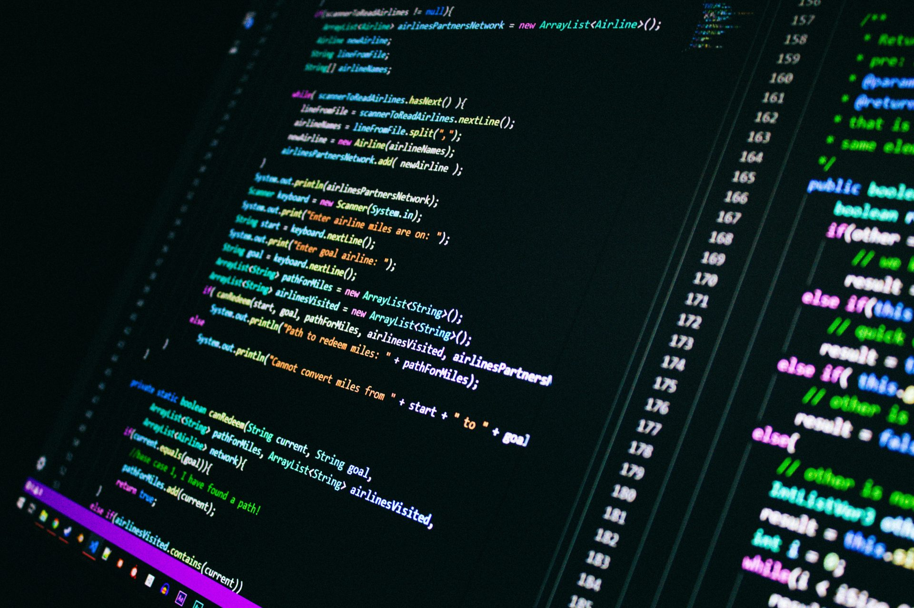

Sobre o Site
Este site foi desenvolvido para apresentar os trabalhos da disciplina de Interface Web. Ao longo do semestre, novos projetos serão adicionados aqui.
Objetivo
O objetivo deste site é demonstrar a evolução no desenvolvimento de interfaces web, utilizando HTML, CSS e JavaScript.
Conteúdo
- Projetos interativos
- Manipulação do DOM com JavaScript
- Interfaces responsivas
